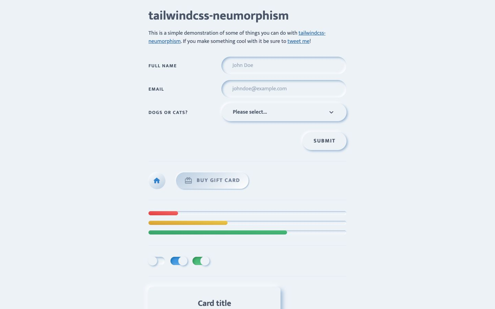

References / Website / 346
tailwindcss-neumorphism demo
A 2020 Tailwind CSS plugin demo in which every form field, button, and toggle is molded from the page.
- Source
- tailwindcss-neumorphism demo
- Creator
- sambeevors (GitHub user)
- Style
- Neumorphism (agent-proposed, not yet reviewed by a person)
- Moods
- Soft, quiet
- Evidence
- Captured with
tools/capture.mjs(headless Chrome, 1440 × 900) on 28 September 2026 and inspected. The screenshot shows the first viewport; the measurement covers up to four screens. - Reviewed
- Rights
- Third-party work, stored with credit for commentary. License: unverified. Rights policy
Context
The plugin repository sambeevors/tailwindcss-neumorphism was created on 4 June 2020.
Observed
- A pale blue page (about #edf2f6 in the screenshot). “Full name” and “Email” inputs are pressed pills with inner shadows; the select and the “Submit” button are raised pills.
- A round home button and a “Buy gift card” pill with a faint gradient sit below.
- Three thin progress tracks carry red, yellow, and green fills; three toggles are soft pills, two filled blue and green.
- Labels are small uppercase letter-spaced sans-serif in slate; a raised “Card title” card starts at the bottom.
Why it belongs
A compact specimen of raised versus pressed states in real form controls. The three saturated progress colors go beyond the one-accent rule.
Measured: shadows on 85 % of boxes (median offset 3.4 px, median blur 4.8 px, none hard), borders on 0 %, median radius 12.6 px.
Borrow
Make every input a pressed well and every button a raised pill; the difference alone tells a user what can be typed into and what can be pressed.
Measured
Machine-extracted by tools/extract-traits.js on . Full measurement.
- Type families
- Mukta (100%)
- Type scale ratio
- 1.5
- Median radius
- 12.6 px
- Mean chroma
- 0.06
- Palette
- #edf2f7 82%
- #4a5568 14%
- #2b6cb0 1%
- #ffffff 1%
- #718096 1%
- #bbcee1 0%
- #d69e2e 0%
- #ecc94b 0%

